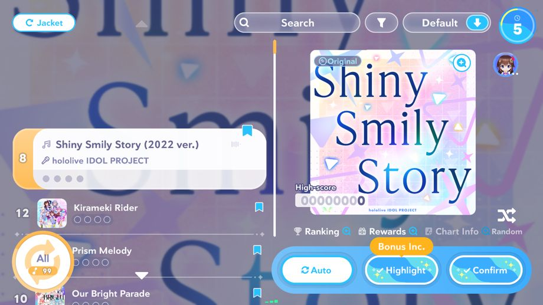

非常感谢您的支持。
我们是“hololive Dreams”运营团队。
我们于2026-09-29 11:00:00进行了Ver.1.2.0版本更新。
新区域“汽水泡泡海湾”开放！
2026-09-29 11:00:00起，新区域“汽水泡泡海湾”开放！
汽水泡泡海湾，是由广阔的海域和群岛构成的新区域。
同时，伴随新区域“汽水泡泡海湾”开放，还添加了新功能“钓鱼”及新的迷你游戏“水球大战”。
详情请参阅［公告］→［一览］→［新区域“汽水泡泡海湾”开放！］。
其他更新内容
◆Pickup选曲

选择乐曲时点击“Pickup选曲”，则会自动选择活动课题曲或登场艺人的歌曲。
通过该功能选出的乐曲，不计算“乐曲长度加成”，而适用每首乐曲相同，且效果相当或更强于长度加成的“Pickup加成”。
※“Pickup选曲”仅在共同演出的“进阶模式”和“私人房间”中有效。
◆演出改良·更新
- 相邻的音符变得更好辨认了。
- 改善了在特定条件下发生的音符牵连现象。
- 改善了短条长音符的判定情况。
- 改善了特定条件下长音符起始点的判定。
- 改善了特定条件下会导致最大连击数变动的现象。
- 筛选自制谱面时，可以选择“排除妨碍”及“排除多指游玩”了。
- 今后关于谱面信息的解锁条件，官方谱面只需游玩过即可查看，自制谱面不设查看限制。
- 今后在演出结算画面或自制谱面详情页可以保存截图了。
- 在乐曲选择画面，将当前已经选择的乐曲从筛选条件中排除时，指针不会再返回到最上方了。
- 节奏游戏中，暂停后选择“返回演出”时，在倒数期间也可以再次按下暂停键了。
- 在特定条件下游玩共同演出时，今后不会再出现尽管已经勾选“包括AUTO”，却仍然无法进行自动游戏的情况。
◆演出选项改良
节奏游戏部分新增了下列演出选项：
-
“应援棒配色”
可以选择在hololive fes.等活动中实际使用的应援棒颜色。 -
“展示判定级别”
可选择在演出中只展示低于特定级别的判定字样。 -
“FAST/SLOW的显示位置”
可以选择让FAST/SLOW字样显示在判定文字的上方或下方。 -
“判定文字位置”
可以调整判定文字显示的位置，共设有100档可供调整。 -
“判定显示类型”
可以选择让判定文字固定在轨道中央，或改为出现在对应的轨道处。 -
“低生命值时的警告特效”
可开启/关闭低生命值时的警告特效。 -
“SP技能时间”
可以选择照旧按线条显示或改为以图标形式显示。 -
“轨道宽度”
可更改轨道宽度。 -
“轨道分割数”
可更改轨道的分割条数。 -
“音符宽度”
可调整音符的宽度。 -
“音符长度”
可调整音符的长度。
另外，节奏游戏部分更改了下列演出选项：
-
“音符显示时间”
有关演出选项中的“音符显示时间”一项，若判定线的位置高于下方截断线，今后会统计从音符出现到抵达判定线的时间。
◆自制谱面功能改良
- 为自制谱面选择难度时，若远低于预计难度则无法设置。
- 今后，自制谱面制作界面的放大率最高可到100倍。
- 改善了在参考特定谱面进行编辑时，运行卡顿的问题。
- 重新编辑已保存的谱面时，特定条件下的长音符和装饰音符不会再变为背离预期的配置。
◆迷你游戏“扑克屋！”的调整
针对在“扑克屋！”中发现的“故意断线可调整游戏成就”的问题，进行了以下调整。
- 针对在“扑克屋！”游戏时，如果玩家主动断线，该场游戏的对战结果将计入总计代币。
伴随本调整的实行，我们重置了“扑克屋！”的总计代币及排行榜统计结果。
详情请查看“关于“扑克屋！”后续的机制调整”。
◆拍摄功能更新
- 添加了显示网格的按键。
- 调整了与障碍物接触时镜头的运作状况。
◆活动改良·更新
- 活动时间结束后，可以在活动首页查看预计放榜时间。
- 在展示活动排行榜结果时，今后必须要点击画面才会进入到下一个画面。
◆其他更新内容
- 调整了“终极向前冲”的匹配机制，今后匹配时会参考各玩家的游玩状况。
- 在账号关联页面中，可以默认隐藏用户ID，或切换显示/隐藏用户ID了。
- 多人游戏时，今后可以举报开启私密模式的玩家了。
◆故障修复
- 修复了各个迷你游戏的其他轻微故障。
- 修复了其他轻微故障。